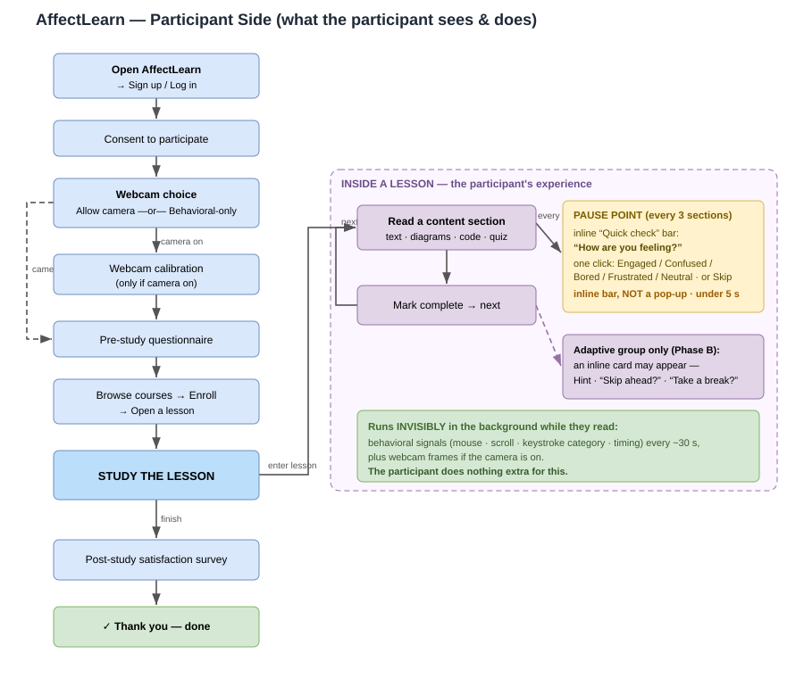
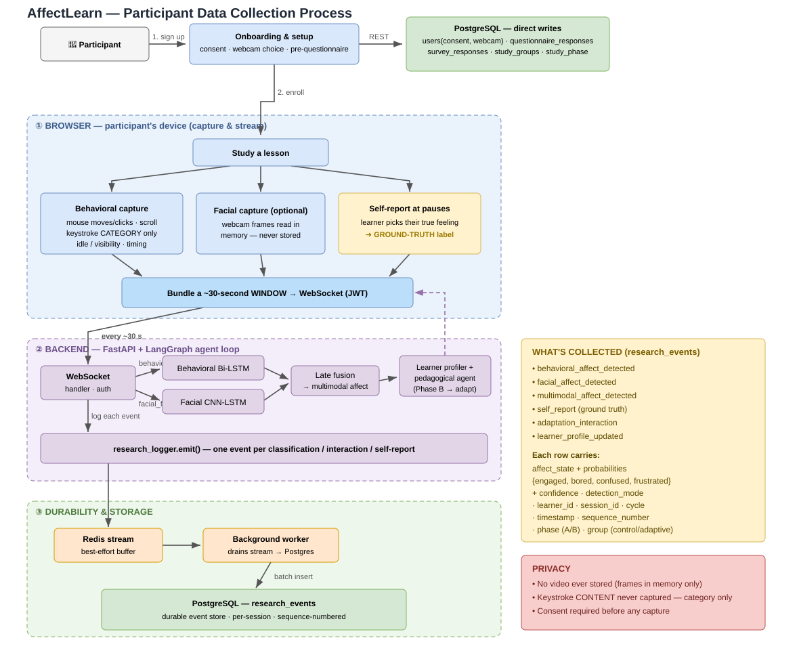

How a participant moves through the app and how their data is captured, on their device and on the way to the server.
AffectLearn is an affect-aware adaptive learning platform. While a participant studies, the app quietly senses their emotional state (from interaction and, optionally, the webcam) and periodically asks how they feel. This page describes the client side end to end.

The lesson is a loop. The participant reads one section at a time and marks it complete to move on. Two things appear inline within the page (never as blocking pop-ups):
At a natural pause point — after every 3 sections — a small inline bar slides in:
“Quick check: How are you feeling about this material?”
Engaged Confused Bored Frustrated Neutral · or Skip
This is the study’s primary ground-truth label — what the learner says they feel, compared against what the models predicted.
If the participant is in the adaptive group during Phase B, the agent may deliver a gentle inline card based on the detected state:
The control group sees none of these (same content, no intervention) — that’s the A/B comparison.
While the participant simply reads, the browser bundles signals into a ~30-second window and streams it to the server over a single WebSocket. The participant does nothing extra for this.
| Stream | What is captured | Visible to participant? |
|---|---|---|
| Behavioral | mouse moves & clicks, scrolling, keystroke category (e.g. alphanumeric / backspace — never the content), idle / tab-visibility, timing | No — silent background |
| Facial (optional) | webcam frames, read in memory only and discarded | A small “camera on” indicator; no video shown/stored |
| Self-report | the one-click feeling at pause points | Yes — the inline “Quick check” bar |

behavioral_window (and facial_features if the camera is on, plus self_report at pauses) over the WebSocket.research_events).Onboarding data (consent, webcam choice, questionnaire, survey, A/B group, phase) is written directly to PostgreSQL.
Each row in research_events is one of these event types:
behavioral_affect_detected · facial_affect_detected · multimodal_affect_detectedself_report (ground truth) · adaptation_interaction · learner_profile_updatedAnd every row carries:
| Field | Meaning |
|---|---|
affect_state + probabilities | predicted label + probability over {engaged, bored, confused, frustrated} |
confidence, detection_mode | model confidence; behavioral_only / facial / multimodal |
learner_id, session_id, cycle_number | who, which session, which 30-s cycle |
timestamp, sequence_number | when; monotonic per session (lets analysts detect dropped events) |
phase, group | study phase (A/B) and cohort (control / adaptive) |